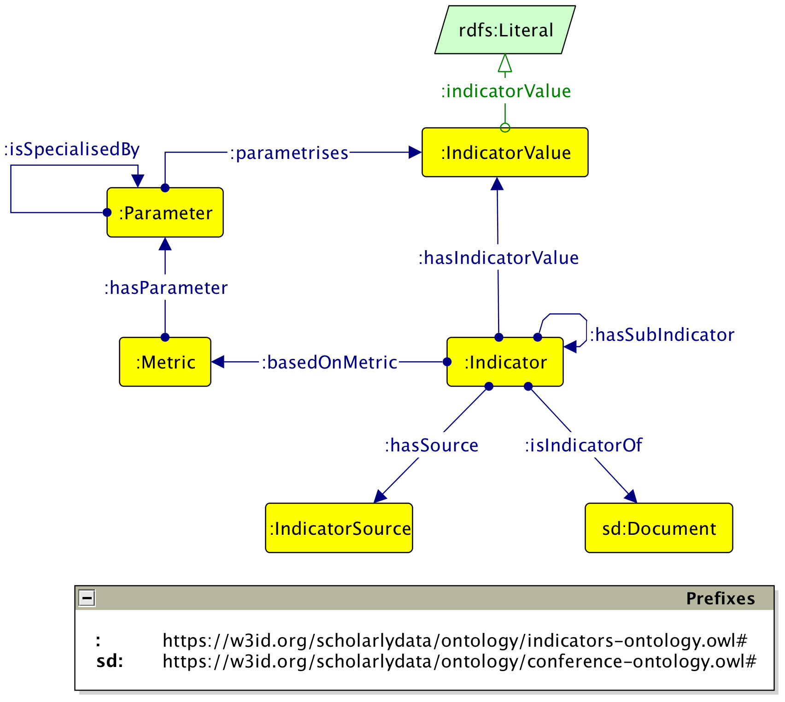

ScholarlyData is the reference linked dataset of the Semantic Web community about papers, people, organisations, and events related to its academic conferences. In this paper we present an extension of such a linked dataset and its associated ontology (i.e. the conference ontology) in order to represent research impact indicators. The latter includes both traditional (e.g. citation count) and alternative indicators (e.g. altmetrics).
Citation-based metrics are the key tools used for evaluating the impact of research. As a matter of fact, scholars are ranked for a variety of reasons. For example, in many countries like Italy, France, or Germany there are governative institutions that use citation count and h-index as the major indicators for carrying out national habilitation processess to the professorship. Nevertheless, non-citation-based metrics or alternative metrics (aka altmetrics) are gaining more and more interest in the scientometrics community as they are able to capture both the volume and nature of attention that research receives online. According to altmetrics is the term that identifies both metrics and the study and use of scholarly impact measures based on activity in online tools and environments. Even though there is limited or none scientific evidence that altmetrics are valid proxies of either impact or utility, a few case studies , , have reported moderate correlations between citation-based metrics and altmetrics. We believe that the semantic publishing community might benefit from a Linked Open Data that provide formal representation, querying, and reasoning capabilities for dealing with semantically enhanced indicators gathered both from citation-based metrics and altmetrics. Accordingly, we formalise an ontology, i.e. the indicators-ontology (I-Ont), designed as a modular extension of the conference-ontology. The latter is the ontology used in ScholaryData, which is the reference linked dataset of the Semantic Web community about papers, people, organisations, and events related to its academic conferences. For experimenting with the ontology, we generate a linked dataset by adding indicators from Scopus and PlumX to a subset of articles from ScholarlyData and we publish such a dataset on the SPARQL endpoint of ScholarlyData. The rest of the paper is organised as follows. presents the related work. describes the ontology and provides its formal definition and examples. presents the experimental extension of ScholarlyData by using the ontology. Finally, concludes the paper.
ScholarlyData defines an ontology, named the conference-ontology , which formalises a subset of the scholarly domain focused on papers, people, organisations, and events related to academic conferences. In this paper we extend the conference-ontology by adding a new ontology module that defines concepts and properties in order to deal with the knowledge associated with research impact indicators and metrics. This module is named the indicators-ontology (I-Ont). In the following sub-sections we provide details about this extension in terms of the design methodology adopted, the description, the formalisation, and the usage example of the ontology.
I-Ont is designed by following best design practices and pattern-based ontology engineering aimed at extensively re-using Ontology Design Patterns (ODPs) for modelling ontologies. The design methodology that we follow is based on an extension of the eXtreme Design , an agile design methodology developed in the context of the NeON project . Such an extension mainly focuses on providing ontology engineer with clear strategies for ontology re-use. According to the guidelines provided by , we adopted the indirect re-use. This means that ODPs are used as templates. At the same time, the ontology guarantees interoperability by keeping the appropriate alignments with the external ODPs, and provides extensions that satisfy more specific requirements. reports the competency questions (CQs) used at design time for modelling the ontology.
| ID | Competency question |
|---|---|
|
CQ1 |
What are the indicators a certain paper is associated with? |
|
CQ2 |
What is the metric used for measuring a certain indicator? |
|
CQ3 |
What is the value associated with a certain indicator? |
|
CQ4 |
What is the source or provider of a certain indicator? |
|
CQ5 |
Is any indicator composed of sub-indicators? |
Those CQs are identified by analysing a basic scenario like the following:
According to Scopus, the article titled "Conference linked data: The scholarlydata project" is cited 4 times.
From the scenario we identify the following key points:
Additionally, we analyse how article level indicators and metrics are typically represented in online scholarly platforms. Namely, we use PlumX for this purpose. We select PlumX as it is listed among the most prominent altmetrics providers and it covers more than 52.6M artefacts. PlumX aggregates different categories of metrics from different sources. This means that PlumX provide indicators at three different granularity level, ranging from the level of the category (i.e. the most general one) to the level of the source (i.e. the most specific one). For example, the article titled "Conference linked data: The scholarlydata project" is associated with 12 captures (i.e. the category in PlumX that indicates that someone wants to come back to a work). The number of captures is provided by PlumX by aggregating different metrics, which are the number of people who have added the article to their online library (i.e. 10 readers) and the number of times the article has been bookmarked (i.e. 2 bookmarks). Additionally, PlumX obtains the metrics by tracking different sources, which, in our example, are Mendeley and CiteULike with 8 and 2 readers, respectively, and Delicious with 2 bookmarks. This scenario is addressed by CQ5.
shows the core classes and properties of the
indicators-ontology. We use the prefixes : and sd: for the namespaces
https://w3id.org/scholarlydata/ontology/indicators-ontology.owl# and
https://w3id.org/scholarlydata/ontology/conference-ontology.owl#, respectively.

The class :Indicator represents an indicator. Examples of indicators are the citation count, social media mentions, reads on Mendeley, etc.
An :Indicator is associated with a sd:Document by means of the object property
:isIndicatorOf. A sd:Document is the class defined in the conference-ontology
that represents a scholarly artefact. As the conference-ontology is focused on modelling
conferences, the latter class may represent either in-proceedings or proceeding artefacts, i.e.
sd:InProceedings and sd:Proceedings, respectively. This modelling solution
addresses CQ1. Additionally, an :Indicator is linked to an :IndicatorSource, a
:Metric, and an :IndicatorValue by the object properties :hasSource,
:basedOnSource, and :hasIndicatorValue, respectively.
An :IndicatorSource identifies the source a certain indicator is gathered from (i.e. CQ4).
Instead, a :Metric represents the metric used for measuring an indicator.
Examples of metrics are the citation count or the count of tweets on Twitter. Finally, an :IndicatorValue
represents the actual value an indicator is associated with. The literal value is represented as
an argument of an :IndicatorValue by using the datatype property :indicatorValue.
The class :Metric is associated with the class :Parameter that
represents a specific characteristic or parameter that is measured by using a specific metric.
For modelling the classes and the relations among :Indicator, :IndicatorValue, and
:Parameter we reuse the Parameter Region ontology design pattern as template.
For example, if we provide an indicator about the social media mentions of an article, then
the :Parameter is represented by the social media mentions. The latter are measured by using a
specific :Metric that can be the count of those mentions. The object property
:parametrises is defined with :Parameter and :IndicatorValue as domain and range, respectively.
This property is useful when the possible values that can be associated with a parameter are within a certain range
or region in a dimensional space. For example, if we have a parameter that represents the quality
of an article in terms of good or poor, then the latters can be modelled as individuals of
the class :IndicatorValue and linked to the individual of the class :Parameter that
represents the quality by using the object property :parametrises.
The object property :hasSubIndicator is defined as transitive and allows to model hierarchies of indicators
associated with an article. For example, it useful when the indicator provided by social media
mentions is measured by using the number of tweets mentioning the article. The number of tweets
identifies a narrower indicator of the paper, which is linked to the broader one represented by the social
media mentions. Similarly, the object property :hasSubParameter allows to represent
the same scenario but focused on parameters, e.g. twitter mentions narrow social media mentions.
The ontology is annotated with the OPLa ontology for explicitly indicating the reused patterns.
We use the property opla:reusesPatternAsTemplate to link I-Ont to the pattern
we adopted as template i.e. Parameter Region. Similarly, we use the property opla:isNativeTo to indicate
that certain classes and properties of are core elements of specific ontology patterns.
This annotations enables the automatic identification of the patterns reused by I-Ont, e.g. with SPARQL queries,
hence facilitating the correct reuse of the ontology.
Finally, I-Ont is aligned, by means of an external file, to
DOLCE+DnS UltraLight . and
report the alignments axioms
between the classes and the properties of the two ontologies,
respectively.
| I-Ont class | Align. axiom | DOLCE class |
|---|---|---|
|
|
|
|
|
|
|
|
|
|
|
|
| I-Ont class | Align. axiom | DOLCE class |
|---|---|---|
|
|
|
|
|
|
|
|
|
|
|
|
|
|
|
|
The following is the formalisation of I-Ont described in . The formalisation is expressed in Description Logics.
As a usage example of I-Ont, we show the RDF representation of the scenario we introduce in . We remind that such a scenario is about the indicators associated with the papers titled "Conference linked data: The scholarlydata project". The data we present below are expressed as RDF serialised in TURTLE . We use the namespaces available form ScholarlyData.
1. @prefix : <https://w3id.org/scholarlydata/examples/save-sd/;
2. @prefix sd: <https://w3id.org/scholarlydata/ontology/conference-ontology.owl#>
3. @prefix sd-ind: <https://w3id.org/scholarlydata/ontology/indicators-ontology.owl#>
4. @prefix sd-inpro: <https://w3id.org/scholarlydata/inproceedings/iswc2016/paper/resource/>
5. @prefix rdf: <http://www.w3.org/1999/02/22-rdf-syntax-ns#>
6.
7. :resource-25-citation-count a sd-ind:Indicator;
8. sd-ind:isIndicatorOf sd-inpro:resource-25;
9. sd-ind:hasSource :scopus;
10. sd-ind:basenOnMetric :scopus-citation-count;
11. sd-ind:hasIndicatorValue :resource-25-citation-count-value .
12.
13. sd-inpro:resource-25 a sd:InProceedings;
14. sd:title "Conference Linked Data: the ScholarlyData project" .
15.
16. :scopus-citation-count a :Metric;
17. sd-ind:hasParameter :citation-count .
18.
19. :resource-25-citation-count-value a :IndicatorValue
20. sd-ind:indicatorValue 4 .
The example describes an indicator, i.e. :resource-25-citation-count associated with:
sd-ind:isIndicatorOf sd-inpro:resource-25,
where the object identifies the in-proceedings article (cf. line 13) titled "Conference Linked Data: the ScholarlyData project" (cf. line 14);:scopus):scopus-citation-count. This metric
has the citation count (i.e. :citation-count) as the parameter being measured (cf. line 17);Instead, the RDF below provides different indicators based on altmetrics tracked by PlumX for the same article of the example above.
1. :resource-25-captures a sd-ind:Indicator;
2. sd-ind:isIndicatorOf sd-inpro:resource-25;
3. sd-ind:hasSource :plumx;
4. sd-ind:basenOnMetric :plumx-captures;
5. sd-ind:hasIndicatorValue :resource-25-captures-value ;
6. sd-ind:hasSubIndicator :resource-25-readers, :resource-25-bookmarks .
7.
8. :resource-25-readers a sd-ind:Indicator;
9. sd-ind:isIndicatorOf sd-inpro:resource-25;
10. sd-ind:hasSource :plumx;
11. sd-ind:basenOnMetric :plumx-readers;
12. sd-ind:hasIndicatorValue :resource-25-readers-value ;
13. sd-ind:hasSubIndicator :resource-25-mendeley-readers, :resource-25-citeulike-readers .
14.
15. :resource-25-bookmarks a sd-ind:Indicator;
16. sd-ind:isIndicatorOf sd-inpro:resource-25;
17. sd-ind:hasSource :plumx;
18. sd-ind:basenOnMetric :plumx-bookmarks;
19. sd-ind:hasIndicatorValue :resource-25-bookmarks-value ;
20. sd-ind:hasSubIndicator :resource-25-delicious-bookmarks .
21.
22. :resource-25-mendeley-readers a sd-ind:Indicator;
23. sd-ind:isIndicatorOf sd-inpro:resource-25;
24. sd-ind:hasSource :mendeley;
25. sd-ind:basenOnMetric :mendeley-readers;
26. sd-ind:hasIndicatorValue :resource-25-mendeley-readers-value .
27.
28. :resource-25-citeulike-readers a sd-ind:Indicator;
29. sd-ind:isIndicatorOf sd-inpro:resource-25;
30. sd-ind:hasSource :citeulike;
31. sd-ind:basenOnMetric :citeulike-readers;
32. sd-ind:hasIndicatorValue :resource-25-citeulike-readers-value .
33.
28. :resource-25-delicious-bookmarks a sd-ind:Indicator;
29. sd-ind:isIndicatorOf sd-inpro:resource-25;
30. sd-ind:hasSource :delicious;
31. sd-ind:basenOnMetric :delicious-bookmarks;
32. sd-ind:hasIndicatorValue :resource-25-delicious-bookmarks-value .
33.
34. :plumx-captures a sd-ind:Metric;
35. sd-ind:hasParameter :captures .
36.
37. :plumx-readers a sd-ind:Metric;
38. sd-ind:hasParameter :readers .
39.
40. :plumx-bookmarks a sd-ind:Metric;
41. sd-ind:hasParameter :captures .
42.
43. :menedely-readers a sd-ind:Metric;
44. sd-ind:hasParameter :readers .
45.
46. :citeulike-readers a sd-ind:Metric;
47. sd-ind:hasParameter :readers .
48.
49. :delicious-bookmarks a sd-ind:Metric;
50. sd-ind:hasParameter :bookmarks .
51.
52. :captures a sd-ind:Parameter;
53. sd-ind:isSpecialisedBy :readers, :bookmarks .
54.
55. :readers a sd-ind:Parameter .
56.
57. :bookmarks a sd-ind:Parameter
58.
59. :resource-25-captures-value a :IndicatorValue
60. sd-ind:indicatorValue 12 .
61.
62. :resource-25-readers-value a :IndicatorValue
63. sd-ind:indicatorValue 10 .
64.
65. :resource-25-bookmarks-value a :IndicatorValue
66. sd-ind:indicatorValue 2 .
67.
68. :resource-25-mendeley-readers-value a :IndicatorValue
69. sd-ind:indicatorValue 8 .
70.
71. :resource-25-citeulike-readers-value a :IndicatorValue
72. sd-ind:indicatorValue 2 .
73.
74. :resource-25-delicious-bookmarks-value a :IndicatorValue
75. sd-ind:indicatorValue 2 .
In the example above the article sd-inpro:resource-25 is associated with
different indicators, i.e. :resource-25-captures, :resource-25-readers,
:resource-25-bookmarks, :resource-25-mendeley-readers, :resource-25-citeulike-readers,
and :resource-25-delicious-bookmarks. Those indicators, are organised hierarchically.
In fact, :resource-25-captures is the top-level indicator, which has two sub-indicators
consisting of :resource-25-readers and :resource-25-bookmarks, respectively (cf. line 6).
In turn, :resource-25-readers has two sub-indicators, i.e. :resource-25-mendeley-readers and
:resource-25-citeulike-readers (cf. line 13), and :resource-25-bookmarks has one sub-indicator only,
i.e. :resource-25-delicious-bookmarks. The indicators are described by the same properties as in the previous
example.
I-Ont is used for modelling an extension of ScholarlyData that exposes a linked open dataset with research impact indicators based
both on citation count metrics and altmetrics. The extension is performed by taking into account only
the in-proceedings articles that are associated with a DOI in ScholarlyData. As at February 2018 ScholarlyData
contains 828 out of 5,185 (~6%) in-proceedings articles with a DOI. Accordingly, we generate an RDF graph
for those articles that counts 25,400 triples. The RDF graph is available for download on the portal
as N-TRIPLES and is accessible from the page about data dumps . We plan to release periodic updates
of the indicators in ScholarlyData, thus the naming convention adopted for RDF dumps uses the date when a
certain update has been performed (e.g. 03-02-2018-indicators.nt). Additionally, the latest
version of the dump is available for querying on the SPARQL endpoint .
The following example shows a SPARQL query that retrieves
all the articles with their associated indicator values (i.e. ?source) tracked by
a source (i.e. ?source) for a certain parameter (i.e. ?parameter).
PREFIX iont: <https://w3id.org/scholarlydata/ontology/indicators-ontology.owl#>
SELECT ?article ?parameter ?source ?value
WHERE{
?indicator iont:isIndicatorOf ?article;
iont:basedOnMetric/iont:hasParameter ?parameter;
iont:hasSource ?source;
iont:hasIndicatorValue/iont:indicatorValue ?value
}
reports the number of individuals in ScholarlyData modelled with the classes of I-Ont. The figures reported in can be obtained via SPARQL .
2,511 2,511 31 16 12 Scopus Citations Citation count Scopus 23.75 PlumX Captures Exports-saves Ebsco 3.5 Readers CiteULike 3.64 Mendeley 34.92 SSRN 2 Mentions Blog mentions Blogs 1 References Wikipedia 1 Social media Shares, like & comments Facebook 1.5 +1s Google+ 10 Tweets Twitter 1.5 Usage Downloads SSRN 469 Abstract view DSpace 16 EBSCO 21.33 SSRN 2,106 Full-text view EBSCO 3 Links out EBSCO 10
I-Ont class
# of individuals
:IndicatorValue
:Indicator
:Metric
:Parameter
:IndicatorSource
:hasSubIndicator (cf. ) in order to get those value
via the SPARQL endpoint of ScholarlyData .
Provider
Top-level parameter
Parameter
Source
Avg value
This work presents the indicator-ontology (I-Ont), which is designed as a modular extension of the conference-ontology used by ScholarlyData. Such an extension is obtained by using well established ontology engineering methods based on the reuse and interlink of ontology design patterns. We showcase I-Ont by using the ontology for representing indicators for a subset of articles in ScholarlyData. The result of the showcase is an RDF graph that is published in the public SPARQL endpoint of ScholarlyData and can be downloaded as a separate dump. As a future work we aim at aligning I-Ont with SPAR ontologies, i.e. c4o, and covering the whole ScholarlyData linked dataset with indicator.
Eva Blomqvist et al. "Experimenting with eXtreme Design". In: Proc. of EKAW 2010. Springer, 2010, pp. 120–134.
Aldo Gangemi and Valentina Presutti. "Ontology design patterns". Handbook on ontologies, 221-243. Springer, 2009. DOI: 10.1007/978-3-540-92673-3_10.
Michael Grüninger and Mark S. Fox. "The role of competency questions in enterprise engineering". In: BenchmarkingTheory and practice, pp. 22–31. Springer, 1995
Pascal Hitzler et al. "Towards a simple but useful ontology design pattern representation language". In: WOP 2017. CEUR-ws, 2017
Andrea Giovanni Nuzzolese et al. "Conference Linked Data: the ScholarlyData project". In Proc. of ISWC 2016 - Resource Track, Lecture Notes in Computer Science 9982:150-158. Springer, 2016. DOI: 10.1007/978-3-319-46547-0_16
José Luis Ortega. "Reliability and accuracy of altmetric providers: a comparison among Altmetric, PlumX and Crossref Event Data". 2018.
Valentina Presutti et al. "The role of Ontology Design Patterns in Linked Data projects". In: Proc. of ER 2016, 113–121. Springer, 2016.
Jason Priem er al. "The altmetrics collection". In: PloS one, 7.11. 2012.
Judit Bar-Ilan. "JASIST 2001–2010". In: Bulletin of the Association for Information Science and Technology 38.6, 24–28. 2012.
Xuemei Li er al. "Validating online reference managers for scholarly impact measurement." In: Scientometrics 91.2, 461–471. 2012.
Hadas Shema et al. "Do blog citations correlate with a higher number of future citations? Research blogs as a potential source for alternative metrics". In: Journal of the Association for information science and technology 65.5, 1018–1027. 2014.
David Shotton. "Semantic publishing: the coming revolution in scientific journal publishing". In: Learned Publishing, 22(2):85–94. 2009.
Angelo Di Iorio et al. "Describing bibliographic references in RDF". In: Proceedings of 4th Workshop on Semantic Publishing (SePublica 2014), CEUR Workshop Proceedings 1155. CEUR-WS.org, 2014.
Silvio Peroni and David Shotton. "FaBiO and CiTO: ontologies for describing bibliographic resources and citations". In: Journal of Web Semantics: Science, Services and Agents on the World Wide Web, 33-43. Elsevier, 2012.
https://w3id.org/scholarlydata/ontology/conference-ontology.owl
For example, the Italian National Agency for the Evaluation of Universities and Research Institutes (ANVUR) adopts Scopus in order to use citation counts and h-indexes as indicators for evaluating scholars in bibliometric academic fields for the national habilitation to the professorhip.
M stands for millions.
http://ontologydesignpatterns.org/cp/owl/parameterregion.owl
https://w3id.org/scholarlydata/dumps/indicators/03-02-2018-indicators.nt
I-Ont is available at https://w3id.org/scholarlydata/ontology/indicators-ontology.owl. The alignments are available at https://w3id.org/scholarlydata/ontology/indicators-ontology-aligns.owl